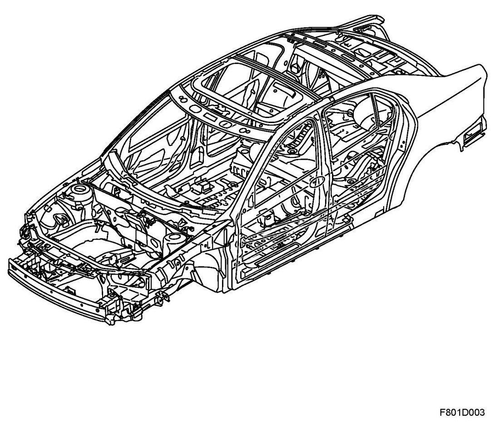
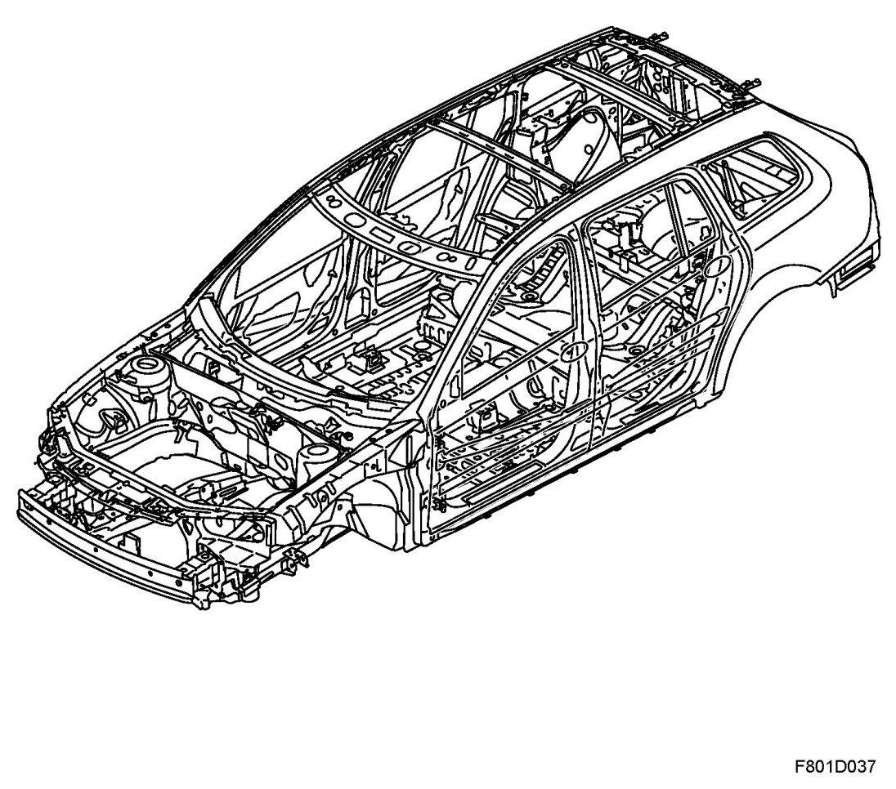
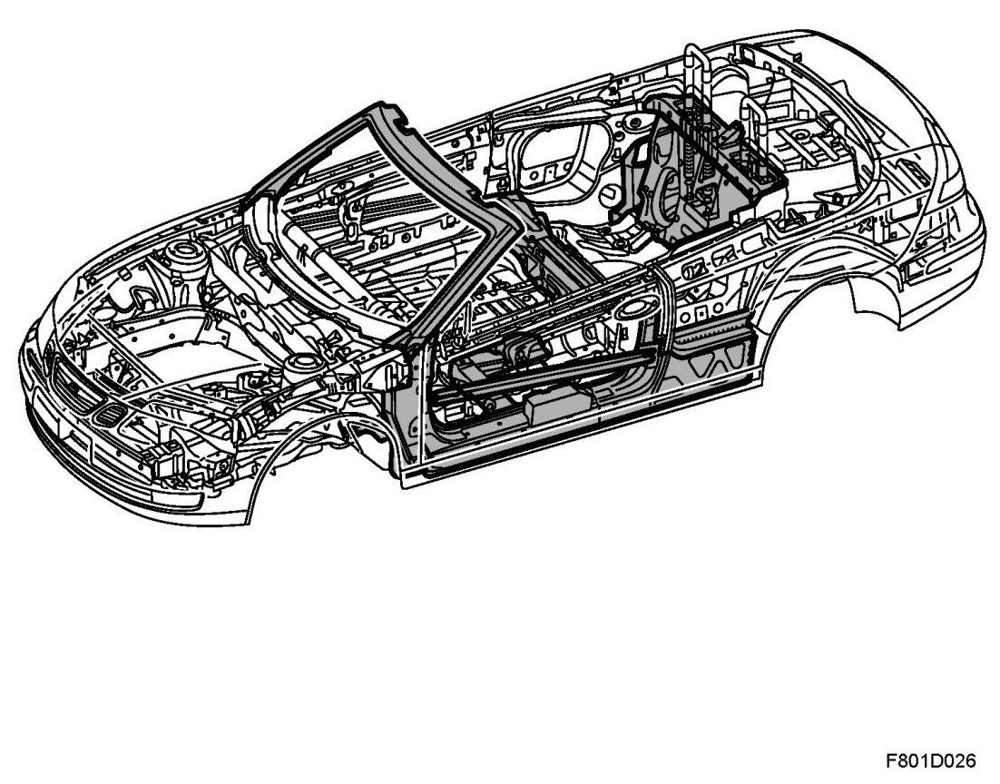

Body Design
Body Design
4D

5D

CV

The choice of body design is decisive to the characteristics of the finished car. The characteristics of the Saab 9-3 Sport Sedan body are high rigidity, stable cabin enclosure, large deformation zones front and rear, and a very efficient side impact protection.
There are several advantages with this design:
- It is easier to optimise chassis geometry, and consequently, the performance of the finished car on the road.
- Crash safety is very high thanks to the stable cabin enclosure and the large, energy-absorbing deformation zones.
- It is easier to isolate the cabin interior from engine vibrations and road noise, and there is less likelihood of squeaks and rattles.
A lot of effort has been expended in testing the body design down to the last detail. Collision and corrosion tests, climate chamber tests and tests in acoustic laboratories as well as thousands and thousands of miles covered in road tests have resulted in the final design of the body. In order to ensure that the body is not changed and deteriorates the performance and characteristics of the car after bodywork repairs, it is extremely important to use only the correct method and materials for all repair work.